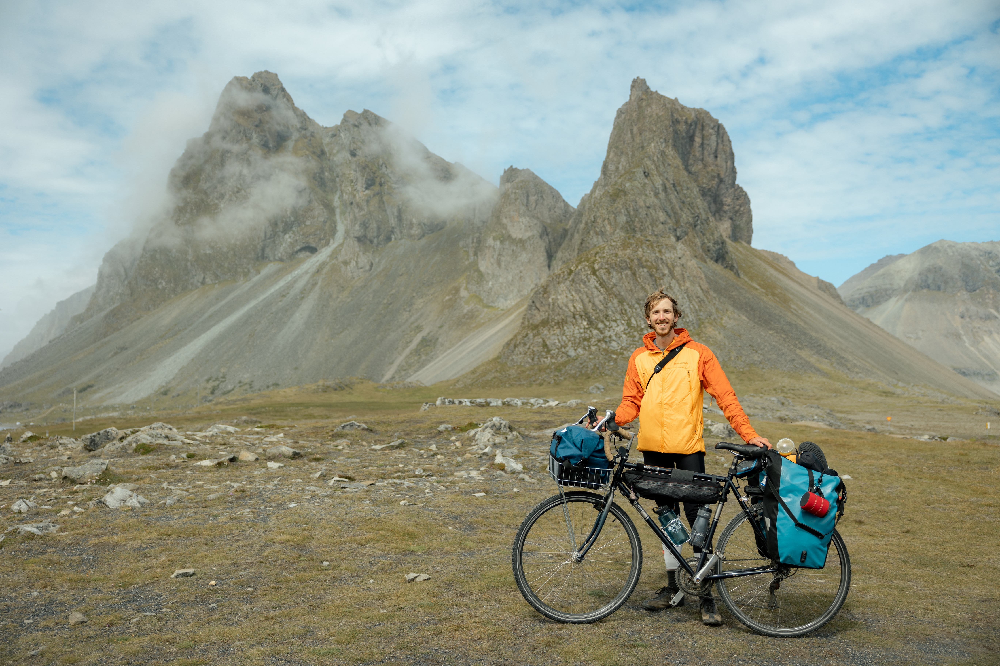

Aiden Kolodziej Department of Biology MIT aidenkzj@mit.edu
I am a graduate student researcher in the Department of Biology at the Massachusetts Institute of Technology (MIT). I am grateful to work with a talented, creative, and supportive group of computational biologists in Sergey Ovchinnikov's group.
My research is focused on the development of structure search methods to uncover structural and evolutionary relationships between proteins obscured by topological rearrangements (insertions, extensions, rewirings, circular permutation, etc.). See the CIRPIN project below for details.
Current research:
Past research:
Prior to MIT, I worked as a research assistant at The Rockefeller University. In undergrad, I worked in Frank Schroeder's group, investigating the genetic variation underlying differences in pheromone production and propionate metabolism in C. elegans:
I like to live out MIT's motto, mens et manus, as a mentor in MIT makerspace, hosting open hours and leading weekly welding trainings.
I create functional and sculptural works from repurposed materials, including bicycle frames, coffee jute sacks, wood pallets, and other found objects. A portfolio of my work can be seen here. I've written about my analog light art for the MIT blog
View my zine collection.
I've cycled Boston to Denver (2021), Vancouver to Tijuana (2023), and Iceland's Ring Road (2024). I've written about a few of the characters and places I encountered along the way: Affogato al Pacific.
View photos from these trips.